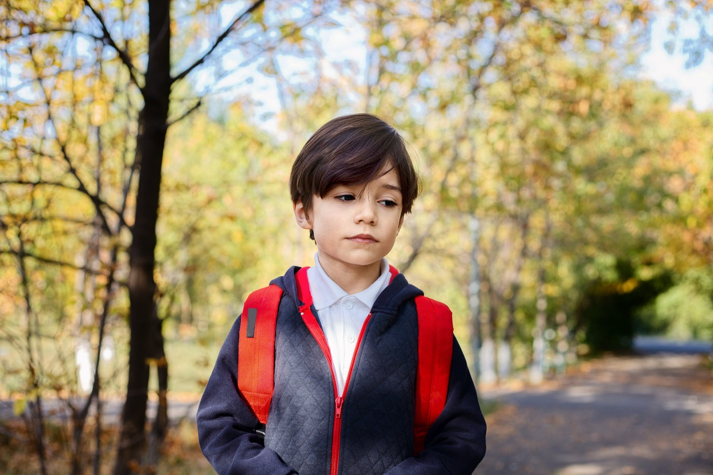

EMILIA
CHABER
PSYCHOLOG DZIECIĘCY
 |
 |
|
|
Oferta
Oferuję pomoc psychologiczną skoncentrowaną głównie wokół kwestii zdrowia emocjonalnego małych dzieci oraz dzieci w wieku szkolnym. Zapewniam poradnictwo i wsparcie dla rodziców, gdy dziecko przeżywa trudności lub gdy niepokoją się oni przebiegiem rozwoju dziecka. Zachęcam do zapoznania się z poniższą ofertą i ogólnymi informacjami dotyczącymi współpracy. Zapraszam do kontaktu.
DZIECI W WIEKU 0–3 LATA
- Problemy z regulacją snu, trudności z zasypianiem, częste wybudzanie się, domaganie się obecności rodzica
- Niepokój, ciągłe domaganie się uwagi, noszenia, trudności z zaspokojeniem potrzeb („high-need baby”)
- Nadaktywność, nadmierne pobudzenie psychoruchowe
- Nasilony lęk separacyjny, domaganie się nieustannej obecności rodzica
- Lęki utrudniające funkcjonowanie
- Osłabione reakcje społeczne u niemowląt, np. osłabiony kontakt wzrokowy, rzadkie uśmiechanie się, słaba reakcja na imię, brak gestów, wokalizacji, schematyczna, powtarzająca się zabawa, brak mowy lub znaczne opóźnienie rozwoju mowy
- Dolegliwości psychosomatyczne (np. bóle brzucha, bez określonej choroby somatycznej)
- Częste wybuchy złości, gwałtowne zmiany nastroju
- Trudności z treningiem czystości / odpieluchowaniem
- Podejrzenie nieprawidłowego rozwoju psychoruchowego
DZIECI W WIEKU PRZEDSZKOLNYM
- Wszelkie lęki, fobie utrudniające funkcjonowanie
- Zaburzenie obsesyjno-kompulsyjne (nerwica natręctw)
- Problemy psychosomatyczne, np. bóle brzucha bez określonej choroby somatycznej
- Problemy ze snem, zasypianiem, częste wybudzanie się
- Problemy związane z wydalaniem (moczenie się, zanieczyszczanie kałem, wstrzymywanie wypróżniania)
- Trudności emocjonalne, np. związane z dużymi zmianami (narodziny rodzeństwa, rozwód, poważna choroba w rodzinie, długotrwała hospitalizacja, rozpoczęcie przedszkola i inne)
- Wybuchy złości, napady agresji, bicie
- Nadmierna wrażliwość, lękliwość, nieśmiałość
- Rywalizacja w rodzeństwie
- Dziecko z zaburzeniami neurologicznymi
DZIECI W WIEKU SZKOLNYM

- Zaburzenia nastroju, płaczliwość, lękliwość, wybuchy złości
- Niska samoocena
- Problemy emocjonalne związane z dużymi zmianami (zmiana/rozpoczęcie szkoły, narodziny rodzeństwa, poważna choroba w rodzinie, długotrwała hospitalizacja i inne)
- Trudności w kontaktach z rówieśnikami
- Trudności z regulacją emocji, gwałtowne reakcje emocjonalne, zachowania autoagresywne, np. samookaleczanie
- Zachowania opozycyjne, drażliwość
- Lęki i fobie
- Zaburzenie obsesyjno-kompulsyjne (nerwica natręctw)
- Trudności emocjonalne związane z zaburzeniami neurorozwojowymi, np. ADHD, zaburzenia ze spektrum autyzmu, w tym zespół Aspergera
- Problemy o podłożu psychosomatycznym (częste bóle głowy, brzucha, bez określonej choroby somatycznej)
- Trudności ze snem, koszmary senne
- Moczenie nocne/dzienne, zaparcia czynnościowe, zanieczyszczanie się
Cennik
Spotkania odbywają się raz w tygodniu i trwają 50 minut.
Koszt jednego spotkania w gabinecie — 120 zł.
Konsultacje online — 100 zł.
Copyright Emilia Chaber © 2020 | Wykonanie: Łukasz Dydek